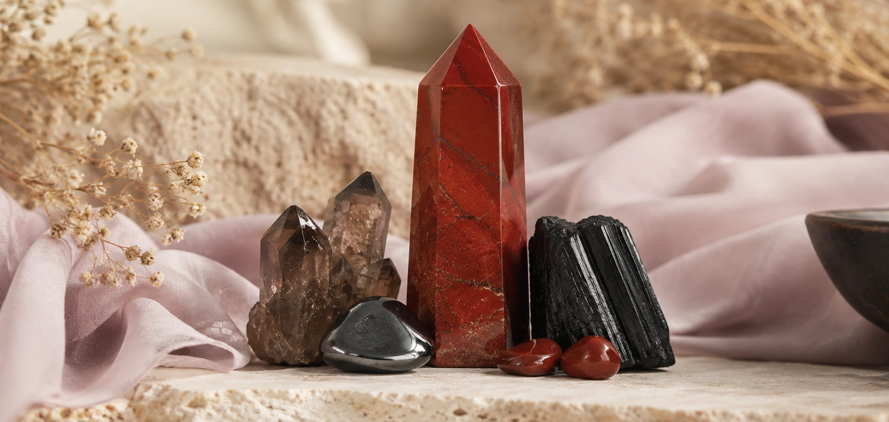
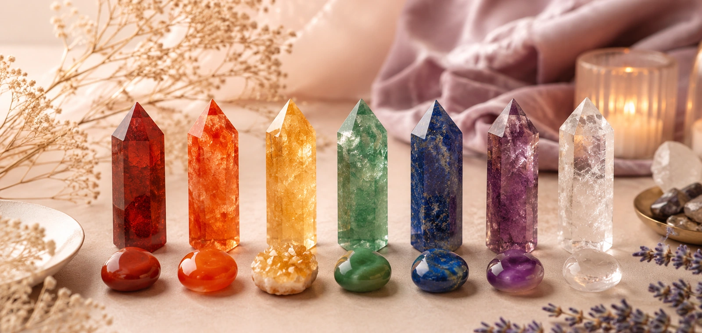
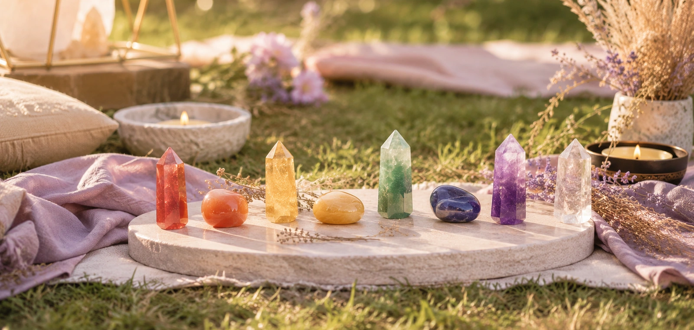
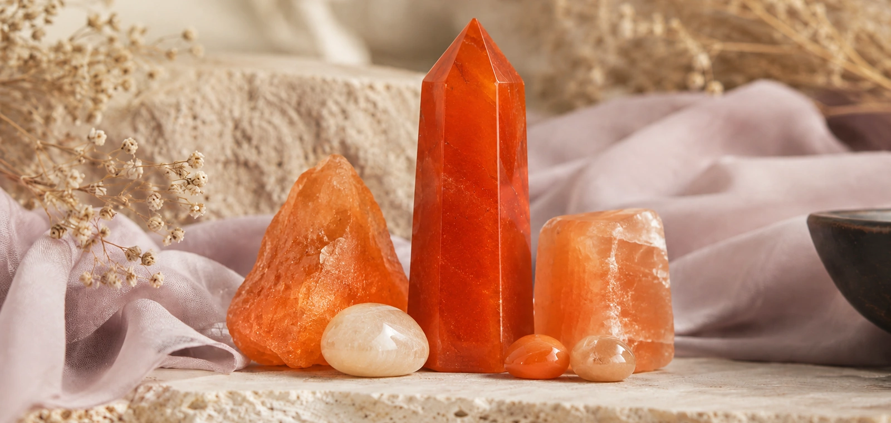
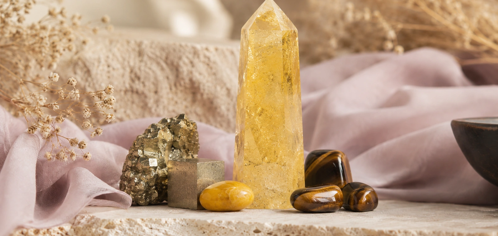
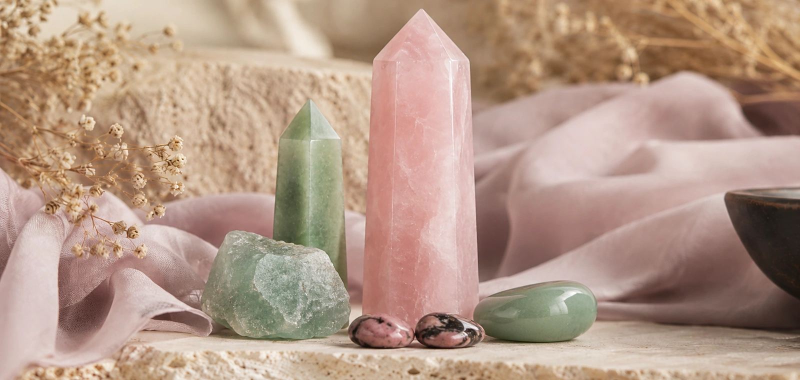
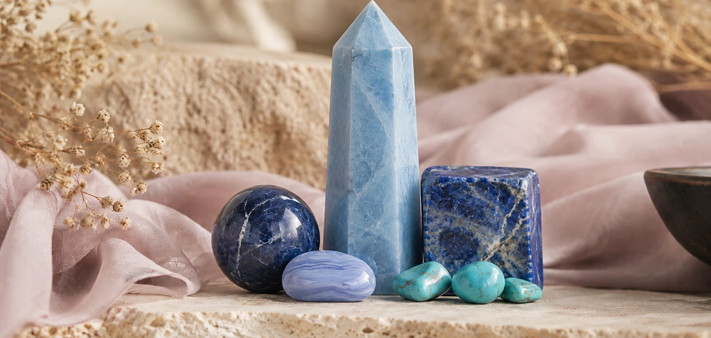
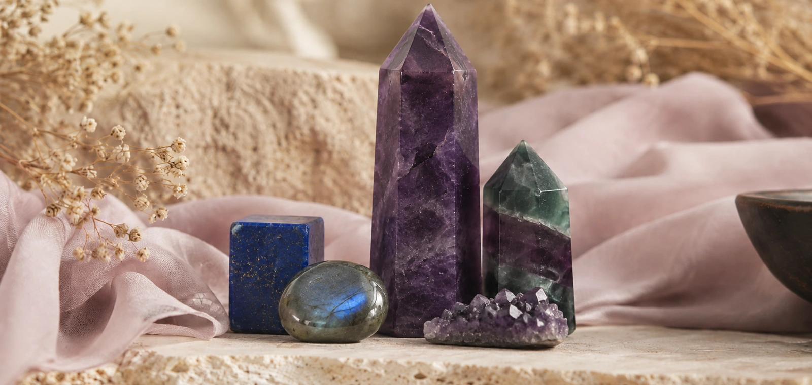
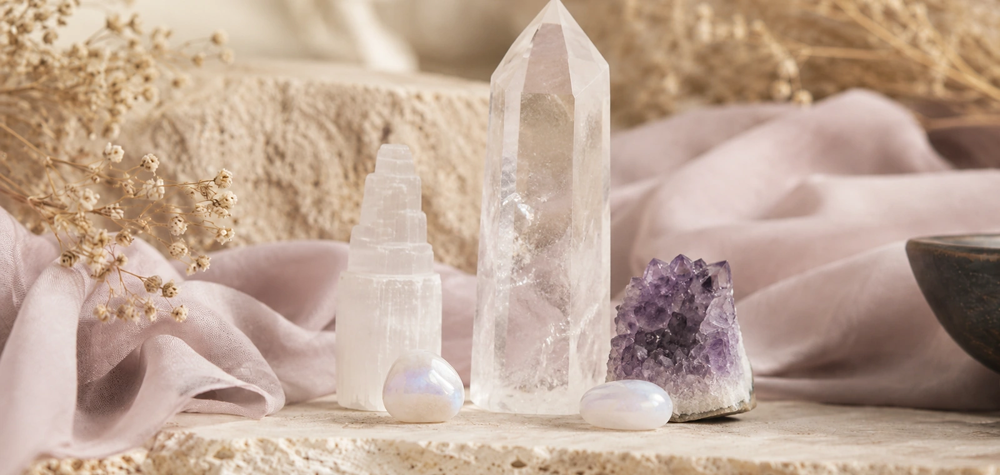

Muladhara · Red / Black
Root Chakra
Grounding, safety, stability, and protection.
- Best for
- Grounding, courage, protection
- Crystals
- Red Jasper, Black Tourmaline, Hematite, Smoky Quartz
- Color
- Red / Black
Chakra Crystal Guide
Discover the meaning of the 7 chakras and find the crystals that support grounding, creativity, confidence, love, communication, intuition, and spiritual clarity.

Energy Alignment
Chakras are energy centers often used in spiritual and crystal healing practices. Each chakra is connected with a different area of life, from grounding and confidence to love, communication, intuition, and higher awareness.
Crystals are commonly chosen by color, intention, chakra connection, and personal energy needs.

Find your chakra
The 7 Chakras
Use this guide to match each chakra with its color, energy focus, and recommended healing crystals.

Grounding, safety, stability, and protection.

Creativity, passion, emotional flow, and joyful expression.

Confidence, motivation, abundance, and personal power.

Love, compassion, forgiveness, and emotional healing.

Communication, truth, calm expression, and clarity in words.

Intuition, insight, inner wisdom, and spiritual vision.

Spiritual clarity, cleansing, meditation, and higher awareness.
Beginner Friendly
Need grounding? Start with Root Chakra crystals. Want more confidence? Explore Solar Plexus stones.
Many chakra crystals are selected by color, such as red for Root, green or pink for Heart, and white or violet for Crown.
Select stones based on love, protection, abundance, clarity, calm, communication, or spiritual connection.
Bracelets are easy to wear daily, towers are ideal for room energy, and crystal sets are perfect for beginners.
Shop by Chakra
Explore chakra bracelets, crystal towers, tumbled stones, and 7 chakra gift sets designed for daily intention and energy balance.
Wholesale & Private Label
Build your own chakra crystal collection with bracelets, towers, tumbled stones, gift sets, packaging cards, and private label options.
FAQ
Clear Quartz, Amethyst, Selenite, and 7 Chakra crystal sets are commonly used for overall energy alignment.
Choose based on your intention. For grounding, start with Root Chakra stones. For love, choose Heart Chakra crystals. For clarity, explore Crown or Third Eye stones.
Many people wear chakra bracelets or crystal jewelry daily as a reminder of their intention and energy focus.
A 7 Chakra crystal set usually includes one or more stones connected with each chakra, often arranged by color from red to violet.